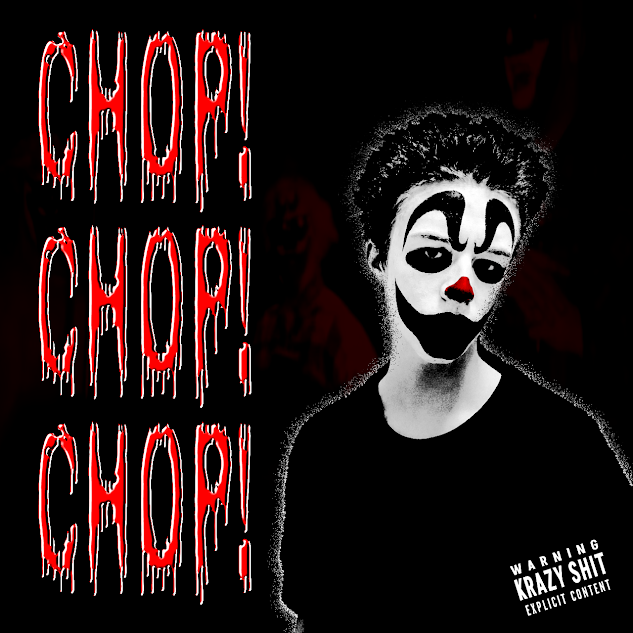

RELEASE SCHEDULE
The following projects are currently in development through Krazy Records. All release dates, artwork, formats, titles, and track listings are subject to change until officially released.

Halloween Horror
| Artist | The Halloween Killaz |
|---|---|
| Type | LP |
| Status | In Development |
| Started | 2026 |
| Expected Release | October 31, 2026 |
| Label | Krazy Records |
| Catalog Number | KRZY-1031 |
| Genre | Horrorcore Hip-Hop |
| Formats | Digital / CD |
Development Progress
| Writing | 🟡 In Progress |
|---|---|
| Recording | 🟡 In Progress |
| Mixing | 🟡 In Progress |
| Mastering | ⚪ Not Started |
| Artwork | 🟢 Complete |
| Manufacturing | ⚪ Not Started |
Planned Track Listing
| # | Title |
|---|---|
| 1 | Unknown |
| 2 | Unknown |
| 3 | Unknown |
| 4 | Unknown |
| 5 | Unknown |
| 6 | Unknown |
| 7 | Unknown |
| 8 | Unknown |
| 9 | Unknown |
| 10 | Unknown |
| 11 | Unknown |
| 12 | Unknown |
Track titles are provisional and may change before release. Some tracks may be added, or removed during the final release.
Description
Halloween Horror is the planned debut LP by The Halloween Killaz. The album is expected to feature original horrorcore material, Halloween inspired themes, remixed tracks, and new recordings. Development is currently underway.
VIEW RELEASE PAGE
Chop! Chop! Chop!
| Artist | Krack Hed |
|---|---|
| Type | LP |
| Status | In Development |
| Started | 2026 |
| Expected Release | TBA |
| Label | Krazy Records |
| Catalog Number | KR-00X |
| Genre | Horrorcore Hip-Hop |
| Formats | Digital / CD |
Development Progress
| Writing | 🟡 In Progress |
|---|---|
| Recording | 🟡 In Progress |
| Mixing | 🟡 In Progress |
| Mastering | ⚪ Not Started |
| Artwork | 🟢 Complete |
| Manufacturing | ⚪ Not Started |
Planned Track Listing
| # | Title | Progress | |
|---|---|---|---|
| 1 | Intro | ✗ | |
| 2 | Chop! Chop! Chop! | ✗ | |
| 3 | Psykopathik | ✓||
| 4 | The Carnival is Calling | ✗ | |
| 5 | Toxik Fumez | ✓ | |
| 6 | 1993 | ✗ | |
| 7 | A Jugglin' Jugga-lugga-lo | ✗ |
Track titles are provisional and may change before release. Some tracks may be added, or removed during the final release.
Description
Chop! Chop! Chop! is an upcoming 7 track album by Krack Hed. The project is currently being developed through Krazy Records. This album is an album made exclusively for the wicked Juggalos with the album and tracks trying to match the theme of the old school wicked clowns focused around 1992-1993, the early days of "I.C.P" Artwork, release date, formats, and track listing remain subject to change.
VIEW RELEASE PAGE← BACK TO HOMEPAGE